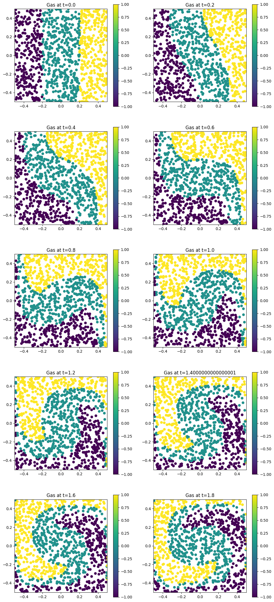
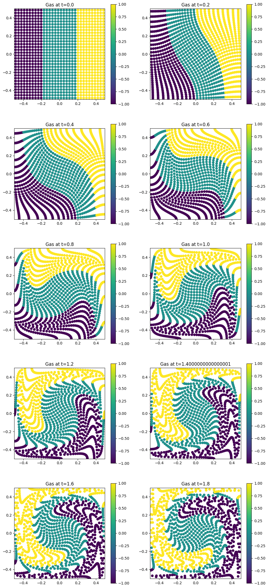

SPH in Beltrami force field#
In this tutorial, you will set up and run a pressure-less SPH example in Struphy, then inspect particle evolution with simple diagnostics.
This notebook focuses on pressure-less flow in a Beltrami force field (model PressureLessSPH). If you want to start from template parameter files, generate them from the command line:
struphy params PressureLessSPH
The notebook keeps everything in Python so you can adjust parameters interactively and rerun sections quickly.
Pressure-Less Flow in a Beltrami Force Field#
We begin with a particle system in a 3D box domain \(\Omega \subset \mathbb{R}^3\).
Given an initial velocity field \(\mathbf{u}_0(\mathbf{x})\), we seek trajectories \((\mathbf{x}_p, \mathbf{v}_p)\) for particles \(p=0,\dots,N-1\) satisfying
Here, \(p \in H^1(\Omega)\) is a prescribed scalar field. In this example, we choose \(p\) so that the force field has Beltrami structure.
In practice, the workflow is: import APIs, define geometry and time stepping, set marker loading, configure propagators, run, and visualize.
First, import the Struphy components used throughout this tutorial.
[1]:
from struphy import EnvironmentOptions, Time
from struphy import domains
from struphy import equils
from struphy import grids
from struphy import DerhamOptions
from struphy import (
BoundaryParameters,
LoadingParameters,
WeightsParameters,
SortingParameters,
SavingParameters,
)
from struphy import Simulation
Step 1: Create Environment, Time Integrator, and Domain#
Set up a Cartesian (cuboid) domain and use Strang splitting for time integration. These choices define the simulation skeleton before any particle data are attached.
[2]:
# environment options
env = EnvironmentOptions()
# time stepping
time_opts = Time(dt=0.02, Tend=4, split_algo="Strang")
# geometry
l1 = -0.5
r1 = 0.5
l2 = -0.5
r2 = 0.5
l3 = 0.0
r3 = 1.0
domain = domains.Cuboid(l1=l1, r1=r1, l2=l2, r2=r2, l3=l3, r3=r3)
Step 2: Define the Beltrami Background#
Next, define velocity, pressure, and density functions for the background equilibrium. We pass these to GenericCartesianFluidEquilibrium, which will later be used to initialize the particle state.
[3]:
# construct Beltrami flow
import numpy as np
def u_fun(x, y, z):
ux = -np.cos(np.pi * x) * np.sin(np.pi * y)
uy = np.sin(np.pi * x) * np.cos(np.pi * y)
uz = 0 * x
return ux, uy, uz
p_fun = lambda x, y, z: 0.5 * (np.sin(np.pi * x) ** 2 + np.sin(np.pi * y) ** 2)
n_fun = lambda x, y, z: 1.0 + 0 * x
# put the functions in a generic equilibrium container
bel_flow = equils.GenericCartesianFluidEquilibrium(u_xyz=u_fun, p_xyz=p_fun, n_xyz=n_fun)
Step 3: Choose Grid and de Rham Options#
Even for particle-based dynamics, Struphy uses spline-based projections for some fields. Here we define a tensor-product grid and matching de Rham settings.
[4]:
# fluid equilibrium (can be used as part of initial conditions)
equil = None
# grid
grid = grids.TensorProductGrid(num_elements=(64, 64, 1))
# derham options
bcs = (("free", "free"), ("free", "free"), None)
derham_opts = DerhamOptions(degree=(3, 3, 1), bcs=bcs)
Step 4: Instantiate the PressureLessSPH Simulation#
Create a lightweight model instance and combine it with the environment, domain, and discretization settings from the previous steps.
[5]:
# import model
from struphy.models import PressureLessSPH
# light-weight model instance
model = PressureLessSPH(epsilon=1.0)
sim = Simulation(model,
env=env,
time_opts=time_opts,
domain=domain,
equil=equil,
grid=grid,
derham_opts=derham_opts,)
/opt/hostedtoolcache/Python/3.10.20/x64/lib/python3.10/site-packages/struphy/models/species.py:198: UserWarning: Override equation parameter self.epsilon =1.0
warnings.warn(f"Override equation parameter {self.epsilon =}")
Step 5: Configure Marker Loading and Saving#
Now set particle-marker parameters. In this example we:
load
Np=1000particleskeep default weight construction
apply reflective boundaries in \(x,y\) and periodic in \(z\)
save all markers via
n_markers=1.0
We also keep sorting simple with one box per direction for this first run.
[6]:
loading_params = LoadingParameters(Np=1000)
weights_params = WeightsParameters()
boundary_params = BoundaryParameters(bc=("reflect", "reflect", "periodic"))
sorting_params = SortingParameters(boxes_per_dim=(1, 1, 1))
saving_params = SavingParameters(n_markers=1.0)
model.cold_fluid.set_markers(
loading_params=loading_params,
weights_params=weights_params,
boundary_params=boundary_params,
sorting_params=sorting_params,
saving_params=saving_params
)
Step 6: Set Propagator Options#
Configure the particle pushers. The key detail is to pass the Beltrami pressure potential to push_v, so the velocity update uses the intended force field.
[7]:
# propagator options
from struphy import ButcherTableau
butcher = ButcherTableau(algo="forward_euler")
model.propagators.push_eta.options = model.propagators.push_eta.Options(butcher=butcher)
phi = bel_flow.p0
model.propagators.push_v.phi = phi
Step 7: Apply Initial Conditions#
Attach the Beltrami equilibrium as the background state for the cold fluid species. No additional perturbation is added in this tutorial run.
[8]:
# background, perturbations and initial conditions
model.cold_fluid.var.add_background(bel_flow)
Step 8: Run, Post-Process, and Visualize#
Execute the simulation pipeline in order:
run()to advance particles in timepproc()to build post-processed outputsload_plotting_data()to bring diagnostics into memory
Then plot marker trajectories to inspect how the Beltrami-driven flow evolves.
[9]:
sim.run()
Starting run for model PressureLessSPH ...
Time stepping: 100%|██████████| 200/200 [00:01<00:00, 156.27step/s]
Struphy run finished.
[10]:
sim.pproc()
Post-processing path /home/runner/work/struphy/struphy/doc/_collections/tutorials/sim_1
No feec fields found in hdf5 file, skipping post-processing of fields.
Evaluation of 1000 marker orbits for cold_fluid
100%|██████████| 201/201 [00:00<00:00, 240.12it/s]
[11]:
sim.load_plotting_data()
Loading post-processed plotting data:
Data path: /home/runner/work/struphy/struphy/doc/_collections/tutorials/sim_1/post_processing
The following data has been loaded:
grids:
self.t_grid.shape =(201,)
self.spline_values:
self.orbits:
cold_fluid, shape = (201, 1000, 8)
Number of time points: 201
Number of particles: 1000
Number of attributes: 8
self.f:
self.n_sph:
[12]:
from matplotlib import pyplot as plt
plt.figure(figsize=(12, 28))
orbits = sim.orbits.cold_fluid
coloring = np.select(
[orbits[0, :, 0] <= -0.2, np.abs(orbits[0, :, 0]) < +0.2, orbits[0, :, 0] >= 0.2], [-1.0, 0.0, +1.0]
)
dt = time_opts.dt
Nt = sim.t_grid.size - 1
interval = Nt / 20
plot_ct = 0
for i in range(Nt):
if i % interval == 0:
print(f"{i=}")
plot_ct += 1
plt.subplot(5, 2, plot_ct)
ax = plt.gca()
plt.scatter(orbits[i, :, 0], orbits[i, :, 1], c=coloring)
plt.axis("square")
plt.title("n0_scatter")
plt.xlim(l1, r1)
plt.ylim(l2, r2)
plt.colorbar()
plt.title(f"Gas at t={i * dt}")
if plot_ct == 10:
break
i=0
i=10
i=20
i=30
i=40
i=50
i=60
i=70
i=80
i=90

Step 9: Repeat with Structured Marker Loading#
To compare loading strategies, run a second simulation in a separate folder (sim_2) so outputs stay isolated from the first run.
[13]:
# light-weight model instance
model = PressureLessSPH(epsilon=1.0)
# environment options
env = EnvironmentOptions(sim_folder="sim_2")
# simulation instance
sim_tess = sim.spawn_sister(model=model, env=env)
This time, use tessellation-based loading so markers start on a regular grid-like pattern. This gives a useful contrast to random loading when you inspect the trajectory plots.
[14]:
loading_params = LoadingParameters(ppb=4, loading="tesselation")
weights_params = WeightsParameters()
boundary_params = BoundaryParameters(bc=("reflect", "reflect", "periodic"))
sorting_params = SortingParameters(boxes_per_dim=(16, 16, 1))
saving_params = SavingParameters(n_markers=1.0)
model.cold_fluid.set_markers(
loading_params=loading_params,
weights_params=weights_params,
boundary_params=boundary_params,
sorting_params=sorting_params,
saving_params=saving_params,
bufsize=0.5
)
[15]:
# propagator options
from struphy import ButcherTableau
butcher = ButcherTableau(algo="forward_euler")
model.propagators.push_eta.options = model.propagators.push_eta.Options(butcher=butcher)
phi = bel_flow.p0
model.propagators.push_v.phi = phi
[16]:
# background, perturbations and initial conditions
model.cold_fluid.var.add_background(bel_flow)
[17]:
sim_tess.run()
Starting run for model PressureLessSPH ...
Time stepping: 100%|██████████| 200/200 [00:01<00:00, 138.82step/s]
Struphy run finished.
[18]:
sim_tess.pproc()
Post-processing path /home/runner/work/struphy/struphy/doc/_collections/tutorials/sim_2
No feec fields found in hdf5 file, skipping post-processing of fields.
Evaluation of 1024 marker orbits for cold_fluid
100%|██████████| 201/201 [00:00<00:00, 237.93it/s]
[19]:
sim_tess.load_plotting_data()
Loading post-processed plotting data:
Data path: /home/runner/work/struphy/struphy/doc/_collections/tutorials/sim_2/post_processing
The following data has been loaded:
grids:
self.t_grid.shape =(201,)
self.spline_values:
self.orbits:
cold_fluid, shape = (201, 1024, 8)
Number of time points: 201
Number of particles: 1024
Number of attributes: 8
self.f:
self.n_sph:
[20]:
from matplotlib import pyplot as plt
plt.figure(figsize=(12, 28))
orbits = sim_tess.orbits.cold_fluid
coloring = np.select(
[orbits[0, :, 0] <= -0.2, np.abs(orbits[0, :, 0]) < +0.2, orbits[0, :, 0] >= 0.2], [-1.0, 0.0, +1.0]
)
dt = time_opts.dt
Nt = sim_tess.t_grid.size - 1
interval = Nt / 20
plot_ct = 0
for i in range(Nt):
if i % interval == 0:
print(f"{i=}")
plot_ct += 1
plt.subplot(5, 2, plot_ct)
ax = plt.gca()
plt.scatter(orbits[i, :, 0], orbits[i, :, 1], c=coloring)
plt.axis("square")
plt.title("n0_scatter")
plt.xlim(l1, r1)
plt.ylim(l2, r2)
plt.colorbar()
plt.title(f"Gas at t={i * dt}")
if plot_ct == 10:
break
i=0
i=10
i=20
i=30
i=40
i=50
i=60
i=70
i=80
i=90
